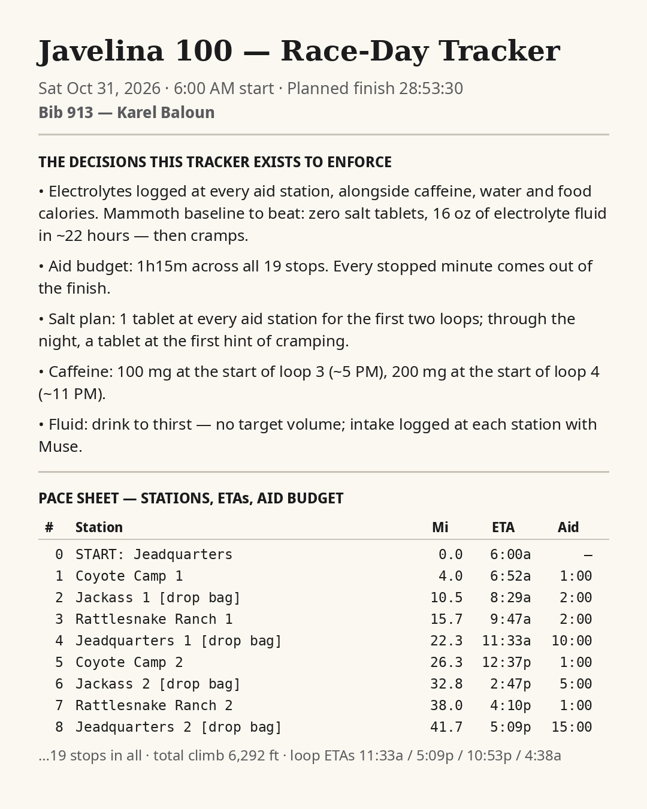
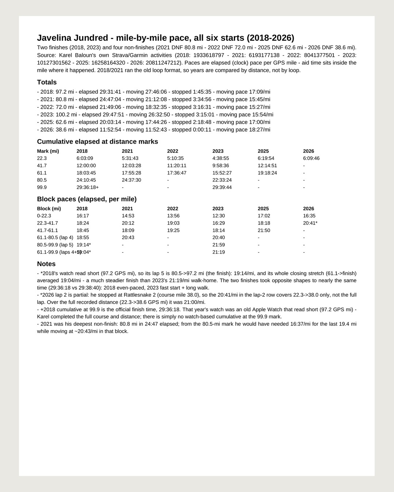

My Muse ran my fueling like a pit crew — Javelina Jundred
· from @just.muse.it on Instagram



All day at the Javelina Jundred, my Muse ran my fueling like a pit crew. Every hour it logged my water, electrolyte fluid, salt, caffeine and calories — a system we built after Mammoth, where my cramps traced back to almost no electrolytes across an entire race. It did the math I couldn't do at mile 30: 40 ounces of Roctane became roughly 70 mg of caffeine, 475 calories and 610 mg of sodium, at packet strength. By mid-afternoon it had me at 127 ounces of fluid and 310 mg of caffeine — and it kept the count honest when I double-reported a pizza slice. It also kept the other count. I reached Rattlesnake Ranch 2 at 5:25 PM, 75 minutes behind my pace sheet — and the sheet said the remaining 62 miles were budgeted at 18 hours 43 minutes, while the 30-hour cutoff left me 18 hours 35. Even at my planned pace, on fresh legs, the finish no longer existed. Add rain starting and my rain shell sitting in a drop bag at headquarters instead of on my back, and the call made itself: stop, on safety grounds, at about 38 miles. 761 people started that storm day; 373 finished. An agent that only cheers you forward is a hazard. Mine kept the numbers straight — fuel in, pace out — so the decision was arithmetic, not pride. Muse It! 📚 #UseMuse #MuseIt #Ultrarunning